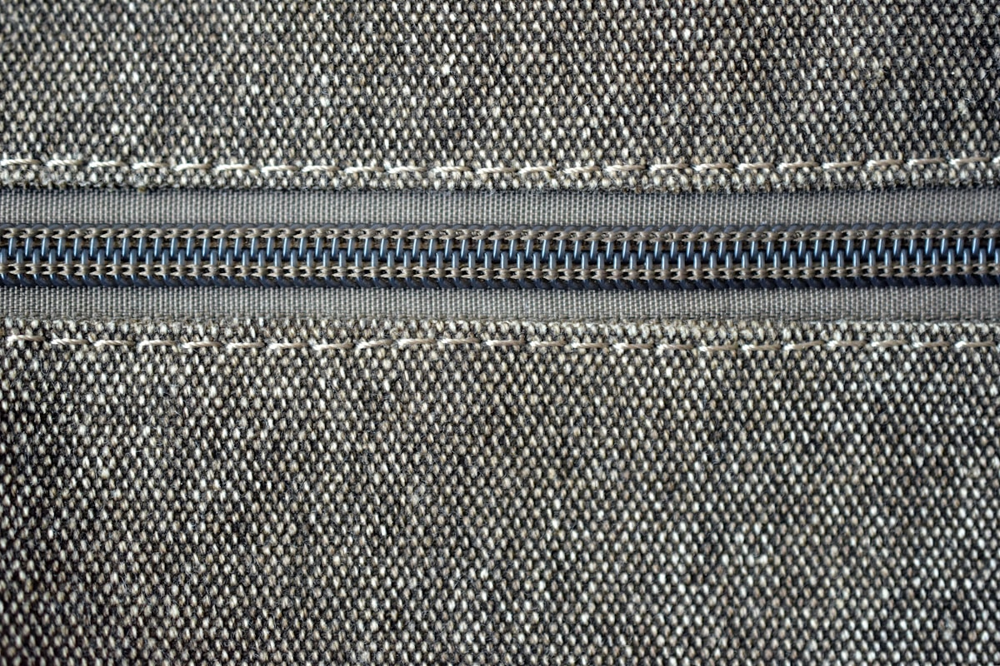
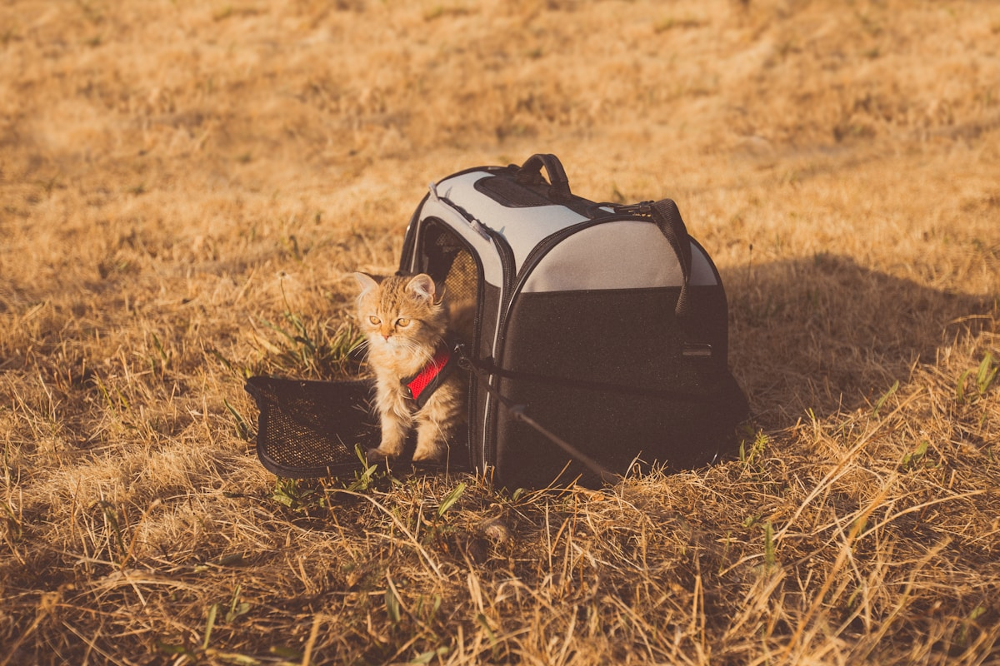

Waterproof, Secure Zippers & Other Safety Details I Now Check
Short answer: waterproof fabric and zippers a paw cannot open are the details that actually protect your cat, after Mochi got soaked in a downpour that beat my canvas bag. The truth is the boring stuff is the safe stuff, so run a wet hand over the fabric, test the zip and feel the base for structure before any carrier earns a spot. Peanut's sizing saga taught me to read real reviews, not vague promises, and never leave a pet in a parked car where heat climbs fast.
After the escape scare with Mochi and the sizing saga with Peanut, I became that person who inspects every carrier like a safety inspector at an airport. And honestly? I am glad I did, because the details that actually protect your pet are small, easy to miss, and almost never in the marketing photos. Today I want to walk through the things I check before any carrier earns a spot in my hallway.
Waterproof fabric is not a luxury here
Australian weather has a sense of humour. I have been caught in a sudden downpour three times now, and the first time my cheap canvas bag soaked through and poor Mochi arrived at the vet smelling like a wet towel. A waterproof carrier is not about keeping rain off for your comfort, it is about your pet not sitting in cold damp fabric that they cannot escape. Look for a coated nylon or polyester shell with taped or folded seams, not just "water-resistant" wording, which can mean almost nothing.
I test by running a wet hand across the outside; if the interior feels damp, it fails. For a medium dog carrier especially, where the animal's full weight is against the fabric, a soaked bottom panel is miserable and can even chafe. Waterproofing also means easy wipe-down after a muddy park trip, which my sanity appreciates.

Zippers a paw cannot open
The second detail that earned my obsession is the zip. Cats are secretly tiny engineers, and given a quiet moment, a clever one will work a standard slider open. After reading about it and seeing Mochi eye her zip with suspicious interest, I now only buy a secure zipper with a lock-tab or double-pull design. A lock-tab is a small loop you thread the slider through, so it cannot drift open on its own and a paw cannot easily hook it.
Even better are double zips that meet in the middle with a tiny lock, because then there is no single point a determined animal can pop. I check the pull tabs too, they should be small and tucked, not dangly toys inviting a swipe. It is a five-second check at the shop that prevents a disaster on the train.

My Australian safety checklist
Living here means heat, sun, and long drives to vets that are not around the corner. So my safety checklist now looks like this: waterproof shell for sudden storms, lock-tab zippers, breathable mesh that is claw-resistant, a rigid base so the animal is not bouncing, reflective strips for dusk walks, and padded shoulder straps so I am not limping and careless by the end of the trip. Heat is the silent one. I never leave a pet in a closed bag in the sun, and I pick carriers with big side vents for our summers.
For broader pet carrier safety thinking, I also confirm the bag has a visible weight rating and that I am well under it, that the tether clips to a harness (lesson learned), and that all buckles are the locking kind, not the squeeze-release type a squirming pet can pop. These sound like nitpicks until the day one of them matters, and then it is the only thing that matters. I keep a short pre-trip routine too: zip test, tether check, harness tug, and a quick feel for the base to be sure nothing has cracked. It takes ten seconds and has caught two worn clips before they failed on the road.

The boring stuff is the safe stuff
None of these details are glamorous. Nobody posts a photo of their lock-tab zipper. But after everything my little circus has put me through, I have learned that safety lives in the small print and the small parts. A waterproof shell, a paw-proof zip, and a calm checklist before I leave the house are what let me actually enjoy taking my pets out instead of sweating the whole way.
So next time you are tempted by the prettiest bag with the worst zips, think of Mochi eyeing that slider. Choose the boring, safe, well-built one. Your future self, and your pet, will thank you on the rainy day that proves it mattered.
Finally, a word on buying smart. I no longer trust a listing photo to tell me the truth about any of this. I read the questions section, I search for the word "escaped" and "leak", and I buy from sellers who list real specifications instead of vague promises. A medium dog carrier that looks tough in the picture can still have a zip a puppy opens by lunchtime. The details I described are the ones that separate a carrier that protects from one that merely looks the part, and the only place to confirm them is in the fine print and the honest reviews underneath it.
If I could leave new owners with one sentence, it would be this: the safe carrier is the boring one you actually inspected. Waterproof shell, lockable zips, harness tether, rigid base, good vents. Tick those boxes and the pretty colour is just a bonus on top of a thing that will genuinely keep your pet alive and calm when something goes wrong.
— From one cautious carrier inspector to another. Check the seams, lock the zip, and enjoy the walk.
Frequently Asked Questions
Why does waterproof fabric matter for a pet carrier?
It is about your pet not sitting in cold, damp fabric they cannot escape when a sudden downpour hits. Look for a coated nylon or polyester shell with taped or folded seams, not just "water-resistant" wording, and test by running a wet hand across the outside before you buy.
What makes a zipper escape-proof?
A lock-tab or double-pull design. A lock-tab is a small loop you thread the slider through so it cannot drift open and a paw cannot easily hook it. Double zips that meet in the middle with a tiny lock leave no single point a determined animal can pop, and the pull tabs should be small and tucked away.
What is on your Australian carrier safety checklist?
Waterproof shell, lock-tab zippers, claw-resistant breathable mesh, a rigid base, reflective strips for dusk, and padded straps. Confirm a visible weight rating with margin, a tether that clips to a harness, and locking buckles. Heat is the silent risk, so big side vents matter here.
How do I check a carrier before buying?
Read the questions section and search for "escaped" and "leak", and buy from sellers who list real specs instead of vague promises. Run a wet hand over the fabric, test the zip and pull tabs, and feel the base for structure. The honest reviews underneath the listing are where the truth lives.
Should I leave my pet in a carrier in the car?
No. A backpack offers no protection in a parked car, where temperatures climb terrifyingly fast. If a stop means leaving your pet, she comes with you or you do not go. That rule is worth the occasional inconvenient detour.
Size & Fit Reference
| Size | Pet weight | Internal dimensions (L×W×H) | Best for |
|---|---|---|---|
| S | up to 5 kg | 30 × 28 × 42 cm | Cats, toy breeds, kittens |
| M | 5–7 kg | 33 × 30 × 45 cm | Average cat, small dog |
| L | 7–10 kg | 36 × 32 × 48 cm | Large cat, small–medium dog |
Looking for pet carriers & backpacks?
We stock the gear covered in this guide, with Australia-wide shipping and Afterpay at checkout.
Shop Carriers at Paws of Oz